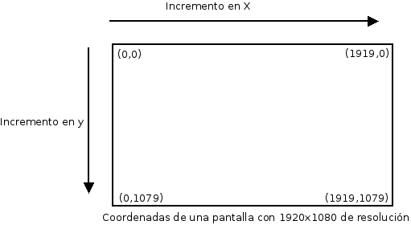
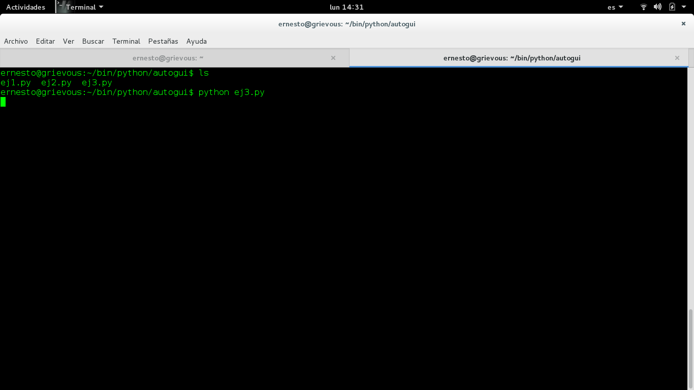

Controlando el movimiento del ratón desde python con PyAutoGUI
Posted on Mon 11 January 2016 in Tutorial de Python • 2 min read
En el desarrollo de software el proceso final es la ejecución de pruebas funcionales. En el caso de aplicaciones gráficas de escritorio o web, viene un técnico a insertar datos, darle clic a un botón todo un proceso a mano!!!
Existen herramientas que facilitan la automatización de dichas pruebas, una de ellas es PyAutoGUI.
Esta librería facilita interactuar con el ratón y el teclado de manera programática.
Si se tiene una pantalla de 1920x1080 de resolución el manejo de coordenadas dentro de la pantalla es como lo muestra la siguiente figura:

El desplazamiento en la pantalla es de izquierda a derecha de manera horizontal con la valor de X, y de manera vertical de arriba hacía abajo con el valor de Y.
Para instalar la librería PyAutoGUI se requiere tener python-xib instalado, para instalarlo en Debian distros basadas en debian se usa apt:
#apt-get install python-xlib
La librería se instala por medio de pip:
#pip install PyAutoGUI
La primera prueba que se hará es mostrar la resolución de la pantalla del equipo donde me encuentro escribiendo este artículo:
El código se muestra a continuación:
#!/usr/bin/env python3
#Se importa la libreria pyautogui
import pyautogui
#Se muestra en pantalla la resolucion de dicha pantalla
#como una tupla.
print(pyautogui.size())
Al ejecutar el script se tiene:
$python ej1.py
Xlib.protocol.request.QueryExtension
(1366, 768)
Así que, la resolución de la pantalla del equipo donde estoy escribiendo la presentación tiene una resolución de 1366x768.
También se puede capturar la posición del ratón:
#!/usr/bin/env python3
#Se importa la libreria pyautogui
import pyautogui
#Captura la posicion del raton
resultado = pyautogui.position()
print(resultado)
El script devuelve una tupla de la posición del ratón en un instante dado. Se ejecutará el script 4 veces, una cada esquina de la pantalla para obtener las coordenas de la pantalla de resolución 1366x768:
Esquina superior izquierda:
ernesto@grievous:~/bin/python/autogui$ python ej2.py
Xlib.protocol.request.QueryExtension
(0, 0)
Esquina superior derecha:
ernesto@grievous:~/bin/python/autogui$ python ej2.py
Xlib.protocol.request.QueryExtension
(1366, 0)
Esquina inferior izquierda:
ernesto@grievous:~/bin/python/autogui$ python ej2.py
Xlib.protocol.request.QueryExtension
(0, 768)
Esquina inferior derecha
ernesto@grievous:~/bin/python/autogui$ python ej2.py
Xlib.protocol.request.QueryExtension
(1366, 768)
También se puede crear una captura de pantalla, El script se muestra a continuación:
#!/usr/bin/env python
#Se importa el modulo
import pyautogui
#Se realiza la captura de pantalla
im1 = pyautogui.screenshot()
#Se salva en un archivo
im1.save('prueba.png')
Y a continuación la captura de pantalla:

Para terminar se mostrará un script que permite mover el ratón a una cierta posición:
#!/usr/bin/env python
#Importar el modulo
import pyautogui
#Se genera un ciclo de 10 veces
for i in range(20):
#Se mueve a la coordenada (100,100)
pyautogui.moveTo(100,100,duration=0.25)
#Se mueve a la coordenada (200,100)
pyautogui.moveTo(300,100,duration=0.25)
#Se mueve a la coordenada (200,200)
pyautogui.moveTo(300,300,duration=0.25)
#Se mueve a la coordenada (100;200)
pyautogui.moveTo(100,300,duration=0.25)
En el siguiente vídeo se muestra el funcionamiento del Script:
En siguiente artículos se seguirá demostrando el uso de la librería.
¡Haz tu donativo! Si te gustó el artículo puedes realizar un donativo con Bitcoin (BTC) usando la billetera digital de tu preferencia a la siguiente dirección: 17MtNybhdkA9GV3UNS6BTwPcuhjXoPrSzV
O Escaneando el código QR desde la billetera: